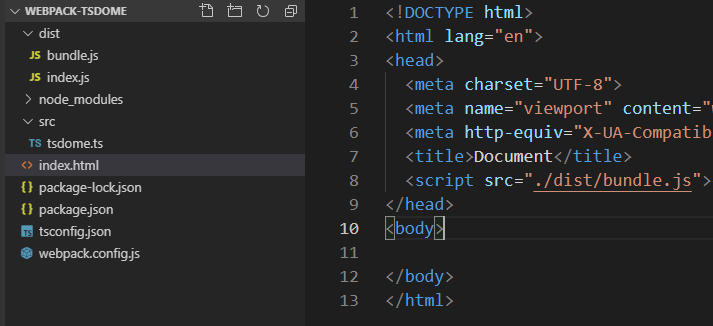
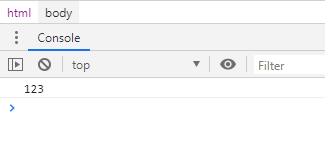

随着vue3.0的即将到来，是时候学习一下TS了
简介：TypeScript是一种由微软开发的自由和开源的编程语言。它是JavaScript的一个超集，而且本质上向这个语言添加了可选的静态类型和基于类的面向对象编程。
ts并不是js语言，所以它是不能直接被浏览器识别的，所有从ts到js是有一个转换的过程，我们可以称之为编译。
ts转化到js和es6到es5是类似的，所以我们借助webpack 构建工具，将要使用的转化插件是ts-loader,和css-loader,style-loader都是差不多的
https://www.webpackjs.com/guides/typescript/ webpack 使用指南
webpack 4 安装webpack-cli 创建webpack.config.js 文件
执行 npm install --save-dev typescript ts-loader 安装转化插件，创建tsconfig.json 配置文件
整体的项目结构如图

测试一下，我们创建一个ts文件tsdome.js,经过编译后申请bundle.js
tsdome.ts
function getname():string {
let name: string = "123"
return name
}
console.log(getname())最终生成的bundle.js(可以不用关心)
!function(e){var t={};function n(r){if(t[r])return t[r].exports;var o=t[r]={i:r,l:!1,exports:{}};return e[r].call(o.exports,o,o.exports,n),o.l=!0,o.exports}n.m=e,n.c=t,n.d=function(e,t,r){n.o(e,t)||Object.defineProperty(e,t,{enumerable:!0,get:r})},n.r=function(e){"undefined"!=typeof Symbol&&Symbol.toStringTag&&Object.defineProperty(e,Symbol.toStringTag,{value:"Module"}),Object.defineProperty(e,"__esModule",{value:!0})},n.t=function(e,t){if(1&t&&(e=n(e)),8&t)return e;if(4&t&&"object"==typeof e&&e&&e.__esModule)return e;var r=Object.create(null);if(n.r(r),Object.defineProperty(r,"default",{enumerable:!0,value:e}),2&t&&"string"!=typeof e)for(var o in e)n.d(r,o,function(t){return e[t]}.bind(null,o));return r},n.n=function(e){var t=e&&e.__esModule?function(){return e.default}:function(){return e};return n.d(t,"a",t),t},n.o=function(e,t){return Object.prototype.hasOwnProperty.call(e,t)},n.p="",n(n.s=0)}([function(e,t){console.log("123")}]);最终可以再浏览器打印出123

经过上面我们初始开发ts的环境已经搭建完毕
一、TS基础类型
布尔值 boolean 数值 number 字符串 string 数组 number[] 或者 Array<number> 元组 Tuple 枚举 enum
任何类型 Any 空值 void Null和Underfined nerver Object 对象
下面是所以的类型，以及所以的类型使用
let isdome: boolean = true
let cname: string = '123132'
let age: number = 123
let list: number[] = [1,2,3,4]
let listname: string[] = ['1','2','3','4']
let listarray: Array<number> = [1,2,3,5]
// 元组 对每个元素都进行单独类型定义 ,如果类型对不上就会报错
let yzlist: [number,number,string] = [1,2,'3']
//枚举 （好像有点像对象）
enum Color {red,green,blue}
let c: Color = Color.red
let notsure: any = 4 //不确认类型，可以用any
function getbname(): void {
// 表示没有换回值的函数
console.log(123)
}
getbname()
// undefined null 意思不是很大
let und: undefined = undefined
let nl: null = null
// never 表示永不存在的值类型，如一些总是抛出错误，或者根本不会有返回值的函数表达式，或者是箭头函数
function error(message: string):never {
throw new Error(message)
}
//object 对象类型
let obj: object = {
a:132
}
// 类型断言
let anykey: any = '七月的风，八月的雨，你的过去，无法参与'
let alength: number = (<string>anykey).length
console.log(alength)
let aslength: number = (anykey as string).length
console.log(aslength)二、变量申明 let const var
没什么可说的，es6 es5 ,let表示局部变量，没有申请提升，只能先申明后使用，否则报错，var 略，const，表示常量，赋值后就不能再次改变了。如果值是一个对象，表示地址不能变。
三、接口
// 定义一个父类接口parent 里面有一个name属性
interface parent {
name: string
}
function getname(anyamin:parent) {
console.log(anyamin.name)
}
//继承于parent的子类必须实现 name属性，要不会报错
getname({name: '123123'})
// 当然接口的属性是可以定义成可选的
interface anany {
name: string,
age?: number,
sex?: string
}
let bbb: anany = {
name: '123132',
}
// bbb可以不去实现sex 和 age ,当然也不能给bbb新增属性，那么也会报错
// 只读属性的定义
interface point {
readonly x: number,
readonly y: number
}
let bp: point = {
x: 123,
y: 123
}
// bp.x = 6 报错，只读属性不能从新赋值
// 函数类型
interface SearchFunc{
//表示一个函数，有两个参数，第一个参数是string类型，第二个参数是number,返回值是void
// x y 为形参，不需要一样
(x: string,y: number): void
}
let func: SearchFunc = function(z: string,b: number) {
console.log(z+b)
}
func('1',2)
// 可索引类型 好像和数组类似，没多大区别
interface stringarrray{
[index: number]: string
}
let arrayname: stringarrray = ['bob','333']
console.log(arrayname[0])
//类 类型 。。。。。。类类型
// 类继承接口
//类 类型
interface ClockInterface {
currentTime: string
}
// 定义一个接口，里面有一个currentTime
// 如果使用类去继承他，则必须再构造函数中初始化它
class Clock implements ClockInterface {
currentTime: string
constructor(h: number,m: number){
this.currentTime = '123'
}
}
interface parent {
tick(): void, //tick方法，返回值是空
name: string // 属性那么,为string 类型
}
class child implements parent {
name: string
constructor(x: string) {
this.name = x
}
tick(): void {
console.log(this.name)
}
}
let c1 = new child('cz')
c1.tick()// 接口继承接口
interface p1 {
name: string
}
interface p2 extends p1 {
age: number
}
class c1 implements p2 {
name: string
age: number
constructor() {
this.name = '123'
this.age = 12
}
}// 接口继承接口
interface Counter {
(start: number): string //代一个string参数，返回值未string的函数
interval: number
reset (): void
}
function getCounter(): Counter {
let counter = <Counter>function(x: number){}
counter.interval = 123
counter.reset= function():void {
}
return counter
}
let cc = getCounter()
console.log(cc.interval)
//接口继承类
class pc {
private state: any
}
interface sel extends pc {
select (): void
}
// 接口不能继承代有私有类型类
class pd implements sel {
constructor () {
}
select ():void {
}
}对于接口而言，不能出现私有的属性或者方法，因为接口的属性在其继承者上，必须实现。二私有的属性和对象是不能够继承的。